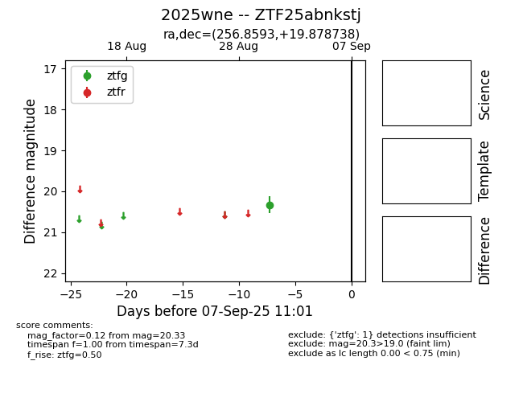

FINK: ZTF25abnkstj
Lasair: ZTF25abnkstj
ALeRCE: ZTF25abnkstj
TNS: 2025wne
YSE: 2025wne
ZTF25abnkstj (ztf,fink)
2025wne (tns,yse)
equatorial (ra, dec) = (256.8593,+19.87874)
galactic (l, b) = (40.6560,+31.46303)

last ztfg=20.15, ztfr=19.88
4 ztfg, 1 ztfr detections